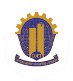

Computer Science PhD Student · Wayne State University
Md. Sajid Alam Chowdhury
Building trustworthy multimodal systems that can reason reliably, preserve privacy, and remain robust.
I am a PhD student in Computer Science at Wayne State University, advised by Prof. Dongxiao Zhu. My research lies at the intersection of multimodal learning and trustworthy AI, with much of my current work centered on Large Vision-Language Models (LVLMs). My current work spans privacy-aware vision-language reasoning, adversarial attacks and defenses, and long-horizon egocentric video understanding and VideoQA, including memory and retrieval mechanisms. Across these directions, I am interested in improving the utility, reliability, and trustworthiness of multimodal systems.
Current focus
Privacy-Aware Reasoning


News
Recent Updates
Teaching
Started as Graduate Teaching Assistant for CSC 3100
Serving as GTA for Computer Architecture and Organization in the Department of Computer Science at Wayne State University
Publication
Article published in IET Image Processing.
Unified adversarial defence framework with diffusion-driven purification, adaptive timestep selection, and reconstruction-consistency detection.
Publication
Paper published at IEEE QPAIN 2026.
DDPM-based adversarial purification with noise-guided timestep selection.
Doctoral Study
Joined Wayne State University and the Trustworthy AI Lab
Began the Computer Science PhD program and started as Graduate Research Assistant
Industry
Completed Software Engineer role at Samsung R&D Institute Bangladesh
Worked on semantic knowledge-graph modeling, reasoning workflows, and applied research before beginning doctoral study.
Research
What I Work On
My research focuses on trustworthy multimodal AI, particularly large vision-language models, with an emphasis on privacy-aware reasoning, adversarial robustness, and long-horizon visual understanding.
Adversarial Robustness & Security
Attacks · purification · detectionLong-Horizon Video Understanding
Egocentric VideoQA · retrieval · memoryPrivacy-Aware Vision-Language Reasoning
I study how vision-language models can remain useful while reasoning about privacy-sensitive visual information in a more controlled and reliable way.
- Privacy boundaries and information disclosure.
- Privacy leakage in multimodal reasoning.
- Privacy-utility trade-offs and privacy-aware alignment.
Adversarial Robustness & Security
I study both adversarial attacks and defenses for vision and vision-language models, with a focus on understanding model vulnerabilities and improving robustness.
- Transferable attacks across models and vision encoders.
- Adversarial purification and detection.
- Robustness and generalization under adversarial perturbations.
Long-Horizon Video Understanding
I study how multimodal systems can understand and reason over extended egocentric video histories while maintaining useful and privacy-aware behavior.
- Long-horizon and egocentric VideoQA.
- Retrieval and reasoning over extended visual context.
- Utility and privacy in long-form visual understanding.
Publications
Research Papers
A Unified Adversarial Defence Framework: Diffusion-Driven Purification with Adaptive Timestep Selection and Detection via Reconstruction Consistency Features
Md. Sajid Alam Chowdhury, Md. Khairul Islam, Kaushik Deb.
Towards Developing a DDPM-Based Adversarial Purification Method with Noise-Guided Timestep Selection
Md. Sajid Alam Chowdhury, Md. Khairul Islam, Kaushik Deb.
Fired_from_NLP@DravidianLangTech 2025: A Multimodal Approach for Detecting Misogynistic Content in Tamil and Malayalam Memes
Md. Sajid Alam Chowdhury, Mostak Mahmud Chowdhury, Anik Mahmud Shanto, Jidan Al Abrar, Hasan Murad.
Fired_from_NLP at AraFinNLP 2024: Dual-Phase-BERT - A Fine-Tuned Transformer-Based Model for Multi-Dialect Intent Detection in the Financial Domain for the Arabic Language
Md. Sajid Alam Chowdhury, Mostak Mahmud Chowdhury, Anik Mahmud Shanto, Hasan Murad, Udoy Das.
Fired_from_NLP at CheckThat! 2024: Estimating the Check-Worthiness of Tweets Using a Fine-tuned Transformer-based Approach
Md. Sajid Alam Chowdhury, Anik Mahmud Shanto, Mostak Mahmud Chowdhury, Hasan Murad, Udoy Das.
CLEF CheckThat!
DOI unavailable Details
Fired_from_NLP at SemEval-2024 Task 1: Towards Developing Semantic Textual Relatedness Predictor - A Transformer-based Approach
Anik Mahmud Shanto, Md. Sajid Alam Chowdhury, Mostak Mahmud Chowdhury, Udoy Das, Hasan Murad.
Education
Academic Background
Wayne State University
Doctor of Philosophy in Computer Science
Detroit, Michigan, USA
- Advisor: Prof. Dongxiao Zhu
- Member of the Trustworthy AI Lab

Chittagong University of Engineering and TechnologyB.Sc. in Computer Science and Engineering
Chattogram, Bangladesh
- CGPA: 3.92 / 4.00.
- Merit Position: 4th out of 127 students, Top 3%.
- Dean's Award, Faculty of Electrical and Computer Engineering.
- Advisor: Dr. Kaushik Deb
Adamjee Cantonment College
Higher Secondary School Certificate (HSC)
Dhaka, Bangladesh
- GPA: 5.00 / 5.00.
- Served as a Prefect from 2017 to 2019.
Ideal School and College
Secondary School Certificate (SSC)
Dhaka, Bangladesh
- GPA: 5.00 / 5.00.
- Talent Pool Scholarship, 81st position in the SSC examination.
Experience
Work Experience
Graduate Teaching Assistant
Wayne State University, Department of Computer Science
Detroit, Michigan, USA
- Graduate Teaching Assistant for Computer Architecture and Organization (CSC 3100)
- Supporting instruction, course logistics, student questions, and assessment workflows.
Graduate Research Assistant
Wayne State University, Trustworthy AI Lab
Detroit, Michigan, USA
- Conducted research in trustworthy multimodal AI and large vision-language models.
- Worked under the supervision of Prof. Dongxiao Zhu
Software Engineer
Samsung R&D Institute Bangladesh
Dhaka, Bangladesh
- Contributed to Mantix, a Semantic Knowledge Graph Modeling Tool developed in collaboration with Oxford Semantic Technologies.
- Built a real-time persistent graph canvas with drag-and-drop support for ontology modeling.
- Developed a rule-authoring interface for advanced reasoning workflows.
- Introduced KCP Explorer, a query builder for Samsung's Enterprise Knowledge Cognitive Platform (E-KCP).
- Contributed to research on real-time adaptive vision correction for VR/AR headsets.
Research Assistant
CUET ML Research Group
Chattogram, Bangladesh
- Conducted research on semantic textual relatedness, multi-dialect Arabic banking intent detection, check-worthiness estimation, multimodal misogynistic meme classification, and offensive language classification.
- Collaborated with faculty and lab members to design, implement, evaluate, and write machine learning and deep learning research submissions.
Coding
Programming Profile
Solved more than 2000 problems across online judges, with strong competitive programming and software engineering foundations.
Codeforces1607Expert · 1000+ solves · Sajid064
 CodeChef20395-Star · 100+ solves · sajid_064
CodeChef20395-Star · 100+ solves · sajid_064
 AtCoder9266-Kyu · 300+ solves · Sajid064
LightOJ50+Accepted solves · sajid064
AtCoder9266-Kyu · 300+ solves · Sajid064
LightOJ50+Accepted solves · sajid064
CodeChef20395-Star · 100+ solves · sajid_064
Programming
ML & Tools
Awards
Honors & Achievements
International
11th Position, DravidianLangTech@NAACL Task 6: Misogyny Meme Detection.
7th Position, CLEF CheckThat! Lab Task 1: Check-Worthiness Estimation.
7th Position, AraFinNLP Subtask 1: Multi-dialect Intent Detection.
25th Position, SemEval Task 1: Semantic Textual Relatedness.
3rd Position, CodeChef Starters 26 Division 4.
13th Position, CodeChef Starters 33 Division 3.
28th Position, CodeChef Starters 88 Division 2.
Academic & Domestic
Samsung SW Certification Test, Professional Level, first attempt.
Samsung AI/ML Skill Certification, first attempt.
Dean's Award, Faculty of ECE, CUET
Technical Scholarship x8 for academic excellence in CSE, CUET
Honorable Mention x5, ICPC Asia Dhaka Regional Site Preliminary Contest.
99th Position, ICPC Asia Dhaka Regional Onsite Contest.
4th Position, ASRRO ROBOCODER Programming Contest, Round 1.
4th Position, CUET Intra Junior Contest, Round 3.
9th Position, 2nd Runner-up in batch, CUET Intra Junior Contest, Round 2.
5th Position, Champion in batch, CUET Intra Junior Contest, Round 1.
Talent Pool Scholarship, 81st Position, SSC Examination
Extras
Beyond Research
Executive Member, CUET Computer Club
- Gained competitive programming experience through regular practice and contests.
- Participated in onsite programming competitions.
- Helped organize university-level programming contests and club activities.
Prefect, Adamjee Cantonment College
- Served as a bridge between students and administration.
- Coordinated assemblies, ceremonies, and institutional events.
- Supported discipline, communication, and student-facing responsibilities.
Contact
Get in touch
For research collaboration, academic questions, or teaching-related communication, email is the best way to reach me.